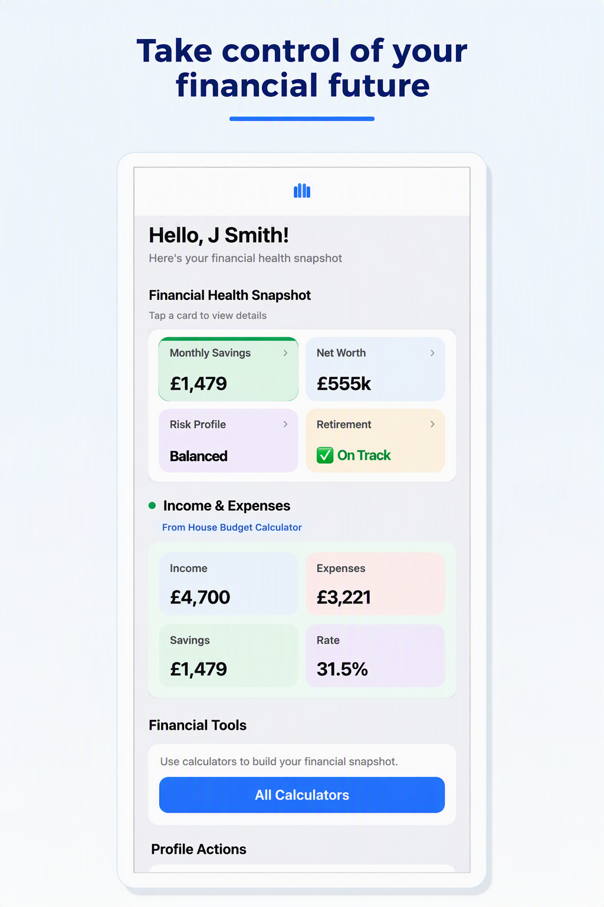

Monthly savings
From the House Budget Calculator. Income minus expenses.
Example: £1,479 per month
User guide
Learn how the Financial Health Snapshot dashboard brings together savings, net worth, risk profile and retirement readiness.
The Financial Health Snapshot is your personal dashboard. It pulls saved results from other calculators into one view so you can see savings, wealth, risk and retirement readiness at a glance.

From the House Budget Calculator. Income minus expenses.
Example: £1,479 per month
From the Net Worth Calculator. Assets minus liabilities.
Example: £300,000
From the Portfolio Return Calculator. Conservative, Balanced or Aggressive.
Example: Balanced
From the Retirement Calculator. Displays On track or Shortfall.
Example: On track
Complete calculators in this order to populate your dashboard.
You do not type into the snapshot directly. Complete and save the House Budget, Net Worth, Portfolio Return and Retirement calculators first.
On track means your projected retirement fund meets or exceeds what you need. Shortfall means you may need to adjust savings, retirement age or spending assumptions. Tap a card to open its detail view.
Monthly savings: £1,479 (from budget)
Net worth: £300,000
Risk profile: Balanced
Retirement: On track
Save results in the linked calculator first. The snapshot only shows saved data.
Review monthly or after any major change to income, spending, assets or retirement plans.
Yes for planning. Replace estimates with actual figures when you have them.
No. Data stays on your device.
Include pensions, investments and other income you expect in retirement — only if you entered them in the Retirement Calculator.
Try this tool on Android and build your financial picture step by step.
Get it on Google Play